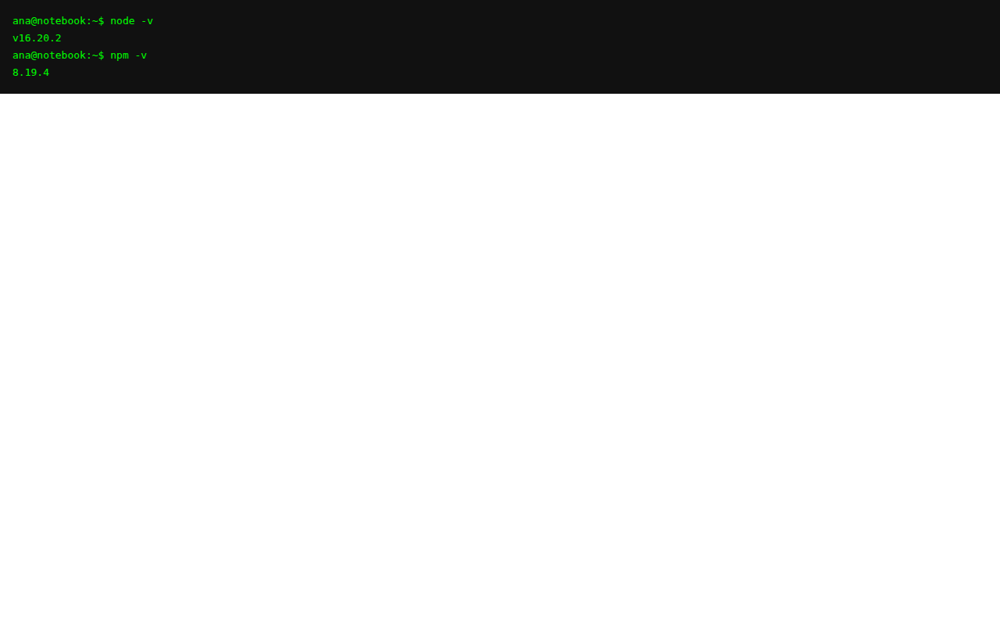

Instalando Node e npm
Antes de criar qualquer projeto, a Ana precisa de duas ferramentas no computador: o Node.js (o ambiente que roda JavaScript fora do navegador — é ele quem executa o servidor do Next.js) e o npm (o gerenciador de pacotes, que baixa as dependências). Nesta página você instala os dois e confere se deu certo.
- Qual versão do Node.js o Next.js 15 exige (18.18+ ou 20+, recomendado 20 LTS)
- Como instalar pelo site oficial nodejs.org (Linux, macOS e Windows)
- Como usar o nvm para trocar de versão facilmente (opcional)
- Como conferir a instalação com
node -venpm -v
A ideia: o Node é a tomada, o npm é a loja de material elétrico
Todo código JavaScript que você escreveu até hoje rodava dentro do navegador — dentro do Chrome, do Firefox, do Safari. O navegador tem o motor V8 dentro dele para executar esse código. O problema: o servidor do Next.js não roda dentro de um navegador, roda no seu computador (ou em um servidor na nuvem). Para isso existir, alguém precisa dar um "ambiente JavaScript" para o computador inteiro. Esse ambiente é o Node.js: ele pega o motor V8 do Chrome, tira de dentro do navegador e instala como um programa normal no seu sistema. A partir daí, qualquer comando seu pode rodar JavaScript direto no terminal — é por isso que o servidor do Next.js existe.
E o npm? Pense nele como a loja de material elétrico da esquina. Quando o Next.js precisa de uma peça — um roteador, um otimizador de imagens, o próprio React — ele não fabrica do zero: ele pega pronto na loja, que é o registro público de pacotes npm (npmjs.com). O comando npm install é literalmente "vá até a loja e traga essas peças para o meu projeto". O npm já vem junto com a instalação do Node.js, então instalando um, você ganha os dois.
Sobre a versão: o Next.js 15 exige no mínimo o Node.js 18.18.0 (ou qualquer 20+). A recomendação oficial é usar a versão LTS (Long Term Support — "suporte de longo prazo"), que hoje é a linha 20.x ou 22.x. Se o seu Node for mais antigo que 18.18, o Next.js recusa rodar com um erro claro de versão. Instale sempre a versão LTS mais recente pelo site oficial.
Passo a passo
1. Baixe no site oficial. Entre em https://nodejs.org e clique no botão grande da versão LTS (etiqueta verde). Baixe o instalador do seu sistema: .pkg no macOS, .msi no Windows, ou o pacote para a sua distribuição Linux (no Ubuntu/Debian: sudo apt install nodejs npm pode traer versão velha — prefira o NodeSource ou o binário oficial em .tar.xz).
2. Instale e abra o terminal. No Linux/macOS abra o Terminal; no Windows, procure por "Prompt de Comando" ou "PowerShell".
3. Confira as versões — é aqui que a Ana confirma que a tomada está funcionando:
ana@notebook:~$ node -v v20.18.1 ana@notebook:~$ npm -v 10.9.2 ana@notebook:~$ npx -v 10.9.2

node -v e npm -v precisam responder com números de versão — se aparecer isso, está tudo pronto.https://github.com/nvm-sh/nvm. Com ele, a Ana troca de versão com nvm install 20 e nvm use 20 — útil quando um projeto antigo exige Node 16 e o novo exige Node 20.Missão: o terminal mostra uma versão antiga demais para o Next.js 15. Troque v16.20.2 por v20.18.1 e 8.19.4 por 10.9.2 (Node 20 LTS + npm 10). Rode ▶ e ✔.
function App() {
return (
<div style={{ background: "#111", color: "#0f0", fontFamily: "monospace", padding: 16, lineHeight: 1.7 }}>
<div>ana@notebook:~$ node -v</div>
<div>v16.20.2</div>
<div>ana@notebook:~$ npm -v</div>
<div>8.19.4</div>
</div>
);
}
function App() {
return (
<div style={{ background: "#111", color: "#0f0", fontFamily: "monospace", padding: 16, lineHeight: 1.7 }}>
<div>ana@notebook:~$ node -v</div>
<div>v20.18.1</div>
<div>ana@notebook:~$ npm -v</div>
<div>10.9.2</div>
</div>
);
}
Quando dá errado
O erro mais comum é o terminal não encontrar o comando depois da instalação:
node -v e o terminal responder que o comando não existe:ana@notebook:~$ node -v bash: node: comando não encontrado Dica do guia: ou o Node não foi instalado, ou a pasta de instalação não está no PATH. No Linux, confira com `which node`. Se instalou pelo .tar.xz, adicione o caminho ao PATH no ~/.bashrc: export PATH="/caminho/do/node-v20/bin:$PATH" Depois feche e abra o terminal de novo e teste `node -v`.
Outro erro real: versão antiga demais:
node -v → v16.20.2 Unsupported Node.js version: v16.20.2. Next.js requires Node.js 18.18.0 or higher. Dica do guia: atualize o Node para a LTS atual (20.x ou 22.x) pelo nodejs.org ou com o nvm: `nvm install 20 && nvm use 20`.
Exercícios
1. Qual comando mostra a versão do Node.js instalada?
2. Qual é a versão mínima do Node.js exigida pelo Next.js 15?
Exercício 1
Escreva o comando que você usaria no terminal para descobrir qual versão do Node.js está instalada no seu computador: